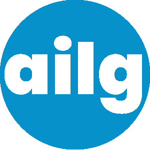
It wouldn't be too much of an exaggeration to say I've been working on this project ever since I started Grad School. When I was applying to the Minneapolis College of Art and Design for their Master's of Graphic and Web Design program, one part of the process was to talk about my plans for a Capstone Project. In other programs, that might be called your Thesis or whatever amounts to 'The big project you do before graduation'. One of the subjects that they suggested for the project was to find a solution to a real-world problem.
Artificial Intelligence is a technology that has been around for quite some time in some form or another. As I was looking at Grad Schools in autumn 2023, something that was getting a lot of attention that year was Generative AI. Suddenly, people were able to create images, stories, music and all sorts of other things using AI and a simple prompt.
Naturally, artists were furious.
I could kind of understand why. After all, how do you take something as distinctly human as creating art and try to automate it? I suppose it wouldn't have been such a big deal if it weren't for the way businesses seemed to respond. Managers and tech industry leaders were thrilled at the prospect of using computers for work that, up until that point, they've had to hire trained professionals to do. Basically, everybody was getting laid off and there wasn't a thing you could do about it.
Of course, this is a more complicated issue than that and one that we are still trying to figure out years later. We haven't yet discovered if this is really going to be a new paradigm for humanity or if it's just an economic bubble that's going to blow up in our faces in a couple years. I mean, remember when everyone was talking about cryptocurrency? How about non-fungible tokens?
The discourse around Generative AI certainly indicated that it was a real-world problem, or at least there were things about it that were problematic. I found the situation really interesting and one that I might be qualified to explore. My undergraduate major was Computer Science and I spent the first few years after college working in software development. As you may surmise, I would much rather be doing something in Graphic Design so I decided to go back to school. I don't consider myself an expert on software - there are a lot of better, more experienced engineers out there. While I have some experience with design, I wouldn't say I'm an expert there either. Having some knowledge of both, however, gives me some perspective on the issue of AI that I think not everyone has.
Anyway, that's my rationale for taking on this project. I probably should have picked something easier, but I wanted to make something that I could be proud of.
This project isn't my first foray into the world of Generative AI. One semester during my Master's program was meant for something like an independent study. Most students use that time to make something that would help them with their Capstone Project later, so I followed suit. I've always enjoyed working with animation and it's something that intrigues me with regards to Generative AI. Animation can be very labor-intensive, so it makes sense to look for ways to streamline the process. During that semester, I did research on how to use Generative AI with a focus on animation. The end result was an animated cartoon about my process learning about AI. While I only used AI sparingly for the actual animation, it gave me a lot of insight about how Generative AI is used.
Concept: A System for the Ethical Use of Generative AI.
I've always loved science fiction stories. I grew up with classics like Star Wars, Blade Runner and the novels of Edgar Rice Burroughs. It's fascinating to imagine what the future will bring and how humanity adjusts to it. A common theme in science fiction is Artificial Intelligence and what place it will have in society. Authors like Isaac Aasimov explored the topic with stories like 'I, Robot'. While these issues were always set in some vaguely distant future, it feels like we are beginning to experience them today. We may not see intelligent robots like Data or C-3PO for a long time yet, but how we deal with AI now may well set an important precedent for future developments.
Innovation, and by extension design, doesn't happen in a vacuum. People generally don't design solutions for problems that aren't there, and conversely it is crucial to define a problem before you can develop a solution.
While Generative AI is a powerful new technology with a lot of potential, its current implementation is plagued with loose regulation and irresponsible use. The goal of this project is to raise awareness of this issue and explore possible ways to address it.
Everyone seems to have their own take on Generative AI nowadays. I've found a few common themes in the discourse over the past few years.
“AI is trained on content stolen from real artists. If you use AI, you're taking work away from real artists.”
“AI is too costly for the environment. It eats up electricity and computer equipment like nothing else.”
“The cost of AI is too high for what we get. 64GB of RAM costs $1200 now so people can make stupid cat videos.”
“Designers need to adapt when new technology arrives. Why struggle against it when you can thrive with it?”
“AI tools are already out there, already being used. You can at least try it out and see what they can do.”
“AI has tremendous potential. It is going to change every facet of our lives.”
Each point of view here illustrates an important part of the issue at large. AI is very smart, but doesn't always live up to expectations. It democratizes art and design, but it churns out a lot of garbage. It can cut down costs, but it's very expensive. I've seen plenty of people wholeheartedly against the technology. Others who support its use will often bring up the benefits of it or else take a pragmatic, if somewhat resigned, stance on it.
Something that this situation brings to mind is from decades ago when Photoshop and other digital art tools were suddenly being used everywhere. A lot of periodicals and other businesses were doctoring photos and there was a public backlash about it. I feel like it had a big effect on public discourse around beauty standards and body positivity in later years but that's a different conversation.
The point is, we've had this kind of experience before. The speed of advancement in technology and industry often outpaces our means to control it. Humans can be deviously smart and will find ways to exploit new technology where legal or moral grey areas exist. While some measure of foresight would be much more helpful, it's our responsibility to push back on unethical practices rather than accept them as the new normal.
Although some may feel like the benefits outweigh the problems with Generative AI, that doesn't mean the problems don't exist. Simply doing away with the technology isn't really an option either. I believe that, given time and effort, we can find a way to make Generative AI work for everyone.
One of the early challenges I had with this project was finding an area to focus on. Trying to address every issue within the context of my Capstone Project would be difficult if not impossible. I had some key constraints I had to work with:
With these things in mind, I tried breaking down the issue into smaller parts to try and find something I could reasonably do.
I think it's important to mention that for this project I decided to focus on Generative AI as opposed to AI in general. AI is a very broad subject with many different uses. It has had a notable impact on multiple fields, such as healthcare and communication. Generative AI, as it pertains to creating content like images, videos, text and sound, will likely have a great impact on the field of Design. Since I'd very much like to work in that field, I have a vested interest in learning more about Generative AI.
Now that people around the world have the knowledge and resources to create Generative AI, it would be nearly impossible to get rid of it entirely. Outlawing it is a possibility, but unless AI presents an overwhelming threat to the public I doubt it would happen. I'm not sure how that would even be enforced. One thing we can certainly do is regulate its use and where the law doesn't quite reach we can promote ethical use of the technology.
There are several points where regulations and ethical practices could be implemented. In a practical sense, these are also possible demographics/audiences for my Capstone Project:
A major limiting factor was my own knowledge and experience. While there are a number of obvious problems with Generative AI, many of the possible solutions involve things that I'm not well versed in. I only have a cursory knowledge of subjects like Copyright Law, Machine Learning and Environmental Regulations.
For instance, one commonly discussed issue is how Generative Models can be trained using art without consent from the artist. I didn't know how Generative AI was programmed or how large models were trained, so without researching the subject thoroughly I couldn't speak to policies made about those things. Even with proper knowledge and influence to affect change in our government or business policies, these are things that take a lot of time. It may be years before we see legal regulations for the use and development of Generative AI. I wanted to work on something that was more within my range.
I thought that the best chance I had for this project to make a positive impact was to try and help other people like me - designers that are learning about AI and may feel a little overwhelmed by the whole thing. While I felt motivated by the idea that anyone could benefit from this project, it wasn't practical to try and make a product for everyone. Besides, I wouldn't count on anyone trusting my advice on matters outside of Design.
I first learned about Generative AI the same way as most other people, through the news and social media. Reactions to this new technology were varied depending on what community you listened to. People in software and technology were generally hopeful or ambivalent. People in the arts and design community on the other hand were emphatically negative. Something I noticed from them, and myself really, was a sense of anxiety and confusion. Any kind of development that disrupts your livelihood is likely to have such an effect. This wasn't something like market trends, a new business practice or a writers' strike though. Up until a few years ago, AI was a rather niche subject in technology and to most artists a relative unknown. I could see why it would freak people out. That being said, I also know that the antidote to fear is familiarity. As we learn more about things and how they work, whether they are animals, machines or other people, they become a lot less scary. I thought if I could learn more about AI, I could dispel the anxiety I was feeling about it. From there, maybe I could share my knowledge and help others do the same thing.
My early experience learning about AI was a big inspiration for this project. Simply searching the internet for information on Generative AI proved to be a confusing and sometimes overwhelming experience. Tutorials were often focused on one particular practice or framework, not general knowledge about AI. As is fairly common with software, there is a set of essential concepts and words that you need to understand in the context of AI. Articles and other materials will talk about Models, Prompts and other familiar words that take on a new meaning when talking about AI (and abbreviations...so many abbreviations!). There is a massive amount of information available on the subject so if you're not exactly sure what you need or what your goals are you can quickly get lost in all of it. Something that I looked for often, and wished I had when I was starting, was some kind of primer to cut through all of the noise. It didn't need to be such a hassle to learn the basics of Generative AI and find some kind of base-level competency.
Another big inspiration for this project was something provided a couple weeks into the semester, actually. While I was still exploring what shape my project should take, our professor introduced us to a website designed by Google called 'Be Internet Awesome'. It's a web-based game designed to teach students from second to eighth grade about the internet. Much of the material is about using the internet and social media safely and responsibly. Something that also caught my eye was an additional piece of curriculum they had called their 'AI Literacy Guide'. Now, this was structured as a lesson for teachers to give their students (again, 2nd to 8th grade) and followed the same theme of safety, but it got me thinking. Maybe I could format my project as a Literacy Guide like this, only geared towards adults. I could further connect this to the original issue with AI by expanding on it, including information on current ethical problems related to Generative AI and possible solutions.
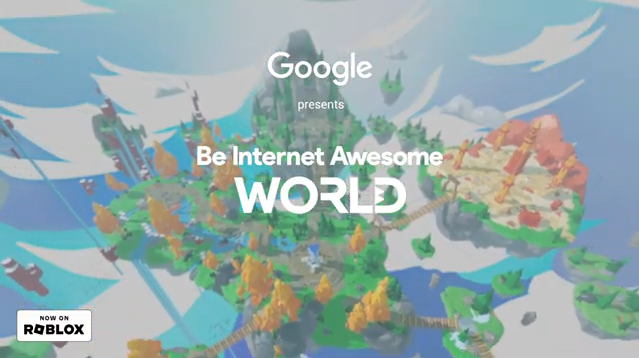
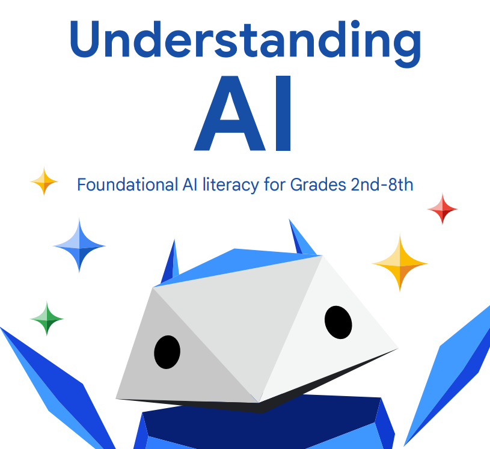
A Literacy Guide on the Topic of Generative AI, made for designers and design-adjacent professionals.
Now that I had a basic idea of what I wanted to make, I had to try and plan it out.
In developing the content and method of delivery for the literacy guide, I had a few goals/principles in mind:
Accessibility: The project needed to have at least some kind of digital component that could be accessed through the internet. I decided that simply putting the guide in a website format would fit that requirement and allow me to make use of the capabilities a website presents. Content could be organized into pages and navigable with a user interface.
Understandability: I don't consider the way I speak or write to be verbose, but I'm still a college graduate with a decent vocabulary. I wanted to convey the information in a way that any young adult (high-school, maybe?) could understand. Obviously, I would be writing in English, but I tried to be mindful of turns of phrase that might sound strange to someone from a different region of the U.S. or even another country. Essentially, I tried to write the guide in a form much like a conversation rather than an academic paper.
Transparency: This would amount to a rather small part of the content, but I thought it would be important nonetheless to give a brief explanation in the introduction to the reader about my myself and my intentions for the guide. I'm not trying to promote or discourage the use of Generative AI. I also don't consider myself an authority on the subject, but I want to make knowledge about it more accessible.
Establishing Base Competency: For the guide to be successful, I needed to compile a curriculum that would cover all of the essential concepts of Generative AI. This would include required vocabulary and terminology, a basic explanation of what Generative AI is and what it does, and practical knowledge of how to use Generative AI tools.
Encouraging Further Learning: Part of the project requirements was to provide a list of all the resources I used for research. I wanted to take this a bit further if possible. For references to recent events and concepts where background knowledge is helpful, I wanted to provide links to webpages or documents explaining them. The web-based format would allow for direct access to these things. Certainly, I wanted to give my sources for the knowledge I share in the guide, but I also wanted to include resources for readers interested in further study of the subjects. Rather than simply mentioning certain topics and telling the reader to look into it, I could provide links to tutorials or documentation that had more focused explanations of those subjects.
Raising Awareness of Ethics in AI Use: While the majority of the guide will be information on AI and its uses, I wanted to promote awareness of some ethical issues regarding AI. As with many parts of life, we shouldn't simply learn about things and how they work, but learn how they effect society and the world around us as well. In the context of this project, I'm not trying to solve all of the issues that have arisen from the implementation of AI but at the very least make people aware of them. I think this is the bare minimum for promoting the safe and responsible use of AI.
User Experience: If the guide is to be successful as an educational resource, it's not enough to simply compile information on Generative AI. How the information is presented is crucial to the reader's engagement with the information. Each individual has a method of learning that works best for them and while I can't account for all of them, I can try to implement some of the commonly successful ones. Things like breaking grouping related information together and distributing it so that there isn't too much on the page at once. Also, I plan to incorporate images throughout the guide to help illustrate different concepts.
“Why not just use Wikipedia?”, you might think. It's certainly something that crossed my mind, since it's a huge resource and I used it several times for my research. As much as I appreciate Wikipedia, it isn't always the best way to learn about something. Individual pages can be very long and full of links to related pages, which can make it challenging to read at times.
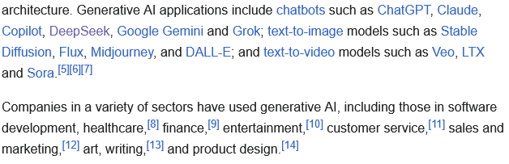
It can definitely be helpful, but I wanted to make something that was a little more focused and furthermore, practical. With a literacy guide I could not only define and explain essential topics for Generative AI, but also connect that information to practical lessons about it. For instance, I could have an explanation of what a Model is, then talk about use cases for it, include an example of a Model used for that purpose and a link to further documentation about it.
“Why not just make a list of tutorials?” Well, I definitely wanted to include some links to tutorials and other resources in the guide but there were a few reasons I wanted to go beyond that. For one, a lot of tutorials nowadays are videos and while these can be very useful they can also be difficult to pick through if you're looking for a particular piece of information. This is especially true with hours-long videos. I didn't want a time-commitment to be a factor when using the guide. Also, tutorials generally focus on a specific task or output for the user and I wanted to take a more general approach. While planning for a specific result is an essential part of using AI tools, there are so many potential uses for them that it wouldn't make sense to try and include them all.
One of the most important parts of my process was compiling something of a curriculum for the literacy guide. As mentioned before, I wanted something that would serve as a thorough introduction to the fundamentals of Generative AI. Your preparation can vary drastically depending on how you plan to use AI, but there is some base knowledge that applies to most implementations:
My initial draft for a userflow in the literacy guide can be illustrated by the diagram below. I figured that user interaction would take a largely linear direction with the capability of jumping to different parts of the guide.
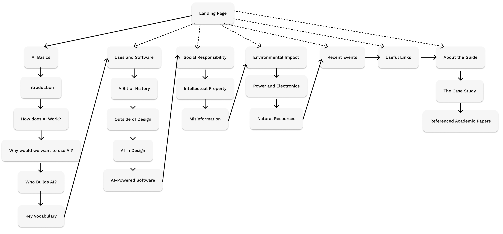
After doing some writing and organizing my mockup, my final list of topics was more like the list below.
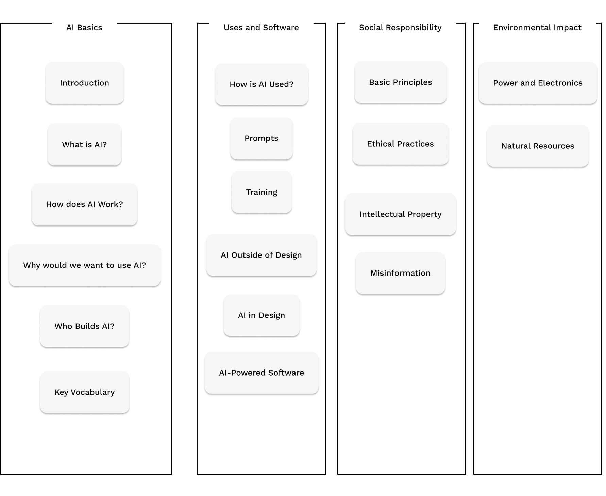
Collecting information for my project involved three kinds of research: Personal Study, User Surveys and Interviews.
With the level of public interest on the topic, it wasn't difficult to find information on Generative AI. My resources were largely internet-based and included web articles, tutorials, encyclopedia articles and academic papers.
Most of the academic papers I found on www.academia.edu.
There were also some studies I found written by large organizations and government organizations. I include a comprehensive list of my cited resources in the guide itself. I will make this list available through Google Drives as well.
Key Demographics for my capstone project:
Target Population for Research
Given the primary demographics I would be designing this project for, I decided that I would try and gather feedback from people that I knew to be involved in design work. On one hand, the likelihood of them being potential users of my product depends largely on the nature of their work and their opinions on Generative AI. On the other hand, I thought there was a very good chance that they would have some exposure to the topic given how prevalent it is in the news and design software nowadays.
The population I chose to survey was comprised of fellow students at MCAD since I could almost guarantee that they were involved with design work to some degree. For that matter, I knew that they would likely have studied Generative AI in their coursework since I had recently been through the same courses.
I contacted my survey group by e-mail requesting their participation. In the interest of conducting interviews in a structured manner that could be done remotely, I put together a survey on Google Forms for participants to fill out. Outside of the ease of access, this format would help implement some of my strategies for my research:
My survey consisted of 12 questions and one free space for additional feedback. The first section of the survey asked about the participant's level of expertise in Graphic Design and technology. Much of the rest asked about the participant's experience with Generative AI.
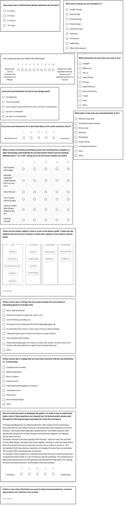
As of now, 4 people have participated in my survey. They were all experienced designers with a good handle on technology.
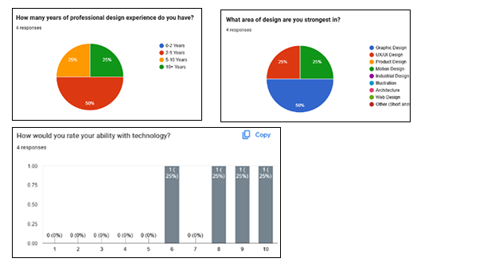
All participants had at least experimented with AI tools, though their assessment of its usefulness was generally middling.
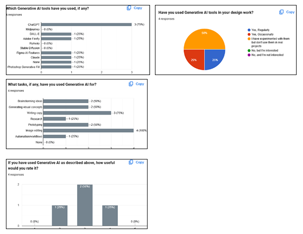
On the question about learning methods, 'Learning as needed' scored the highest while 'Text without images' scored lowest.
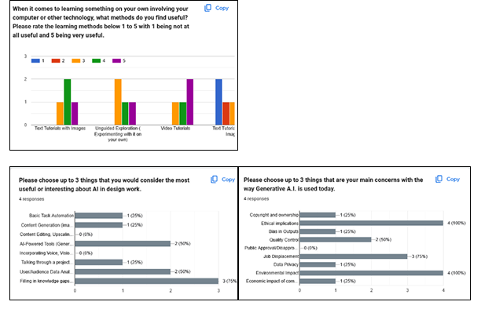
Participants seemed primarily concerned about the environment and job displacement. Ethical implications was another common concern though I feel like I worded that too broadly. The most promising uses for AI among participants was analyzing user data, improving their workflow with AI tools, and dealing with tasks they're unfamiliar with.
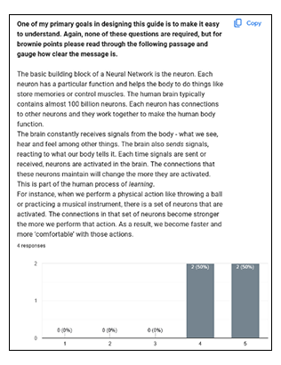
Everyone answered the last question which I am really grateful for. Feedback for my writing style was positive overall, which is very encouraging.
Much of the feedback I received aligned with my expectations, but it was an important step nonetheless. Given my interactions with fellow MCAD students over the years, I had a pretty good idea of what their point of view would be on AI but I wanted to make certain. This would provide a good baseline for my project as far as its content and direction.
Participants were a little more concerned about the ethics of AI, as well as its environmental impact, than I expected. I would like to add more content to the guide pertaining to these topics, though it all depends on how much time I have.
It seemed like participants preferred visual learning or learning through working on projects. I will certainly have to add more visual elements to my guide, though I definitely want any graphics to assist in learning rather than just adding noise.
While my primary focus was on the information of the guide, the format of the website containing it would also need consideration. I wanted the User Interface to be a simple as I could manage and use common design patterns so that users would be more likely to understand their function immediately.
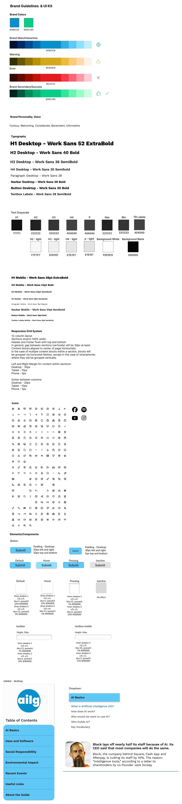
Discuss what you learned and what you would improve next time.